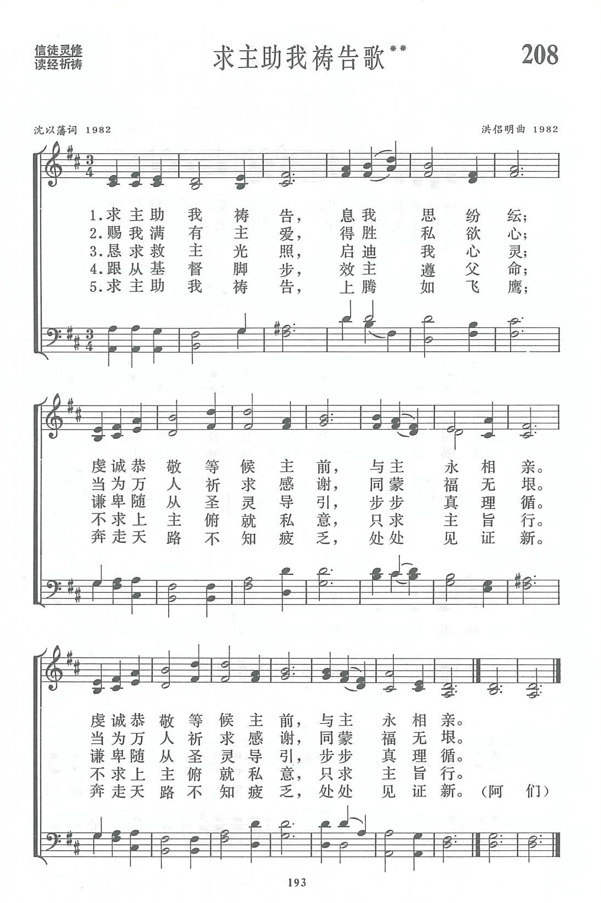

|
|
讚美詩(新編) 第208首《求主助我禱告歌》 |
|
|
|
|
https://www.zanmeishige.com/tab/13881.html?songbook=1&index=208
 |
|
|
|
|

https://youtu.be/Q1ZwsRP6hEs
第208首 求主助我祷告歌** _沈以藩 Help us to pray, O Lord
经文：“耶稣在一个地方祷告。祷告完了，有个门徒对他说：‘求主教导我们祷告’”(路11：1)。
这首诗与第45首《基督永长久歌》同样是沈以藩主教夫妇合作的作品。
沈以藩(简历参阅第45首)谈到他所以写这首诗，是“有感于一般人的祈祷生活中，往往存在只求上帝满足个人愿望的自私倾向，希图在这首诗中表达祷告的真谛”。
在这首诗内，作者先说明祈祷吋要放下个人的纷纭思念，恭敬等候主前；
第二节要求扩大心怀，为万人祈求感谢；
第三、四节强调个人的意志要与上帝的意旨合一。只有效主脚踪，得胜私欲，才能谦卑顺服圣灵的引导；
最后一节把灵修生活与现实生活统一起来，落实于获得上面的能力，“奔走天路不知疲乏，处处见证新”。
这是一首灵修默想的诗。洪侣明(简历参阅第45首)理解它是诚恳、朴素、宁静的，应该体现出在恳切祷告寻求主旨意的过程中，逐渐从朦胧到明朗的探索过程。她便按照这样的要求去谱曲。
她发现赞美诗曲调用2起头的不多，想努力尝试，便选用2 3 2 ｜ 1-2｜3--为首句，并把3停留在一个变调的和声上，体现出祷告前心里模糊不清的光景。后来乐曲逐步展升，情绪有所明朗，但第四乐句最后一个音3，仍与首句中的3相呼应。随后将三、四乐句重复一遍，情绪更加恳切坚定，最后全曲结束在明朗稳定的1音主和弦上，体现出祈祷的圆满结果。
-
沈以藩 1948-1994
沈以藩，男，民國37年（1948年）畢業於金陵大學哲學系，出生於1928。
- 中文名
- 沈以藩
- 國 籍
- 中國
個人簡介
編輯
上海人。民國37年（1948年）畢業於金陵大學哲學系，因成績優異獲“金鑰匙”榮譽。
個人事蹟
編輯
1951年聖公會中央神學研究科畢業，先在上海諸聖堂工作，1954年受牧師職。1955年任中華聖公會總議會常委會辦事處幹事。1958年上海基督教實行聯合禮拜後，先後任長寧區、靜安區聯合禮拜籌委會副主席以及徐彙區聯合禮拜籌委會主席。1981年上海社會科學院成立宗教研究所，為該所研究人員，同年擔任國際禮拜堂主任牧師。1986年沈任中國基督教協會駐會副會長後同時仍為上海社科院宗教研究所特聘研究員，於1988年被評為副研究員。
1988年6月26日沈被祝聖為主教。1991年任中國基督教協會副會長兼總幹事。80年代以來，沈還是中華基督教青年會全國協會董事、華東神學院董事、愛德基金會董事、上海市基督教教務委員會副主席。沈歷任上海市第八屆人大代表、上海市政協第七屆常務委員、全國政協第八屆委員。
沈以藩關心中國基督教的神學和神學教育，常在海內外發表有獨到見解的神學理論文章。在擔任全國兩會神學教育委員會主任後，籌劃全國神學教育的規範，組織編寫神學教育叢書，並設立神學教育基金等。沈還是《簡明不列顛百科全書》（中文版）基督教條目譯稿的審稿人之一。1992年被聘為國務院宗教事務局教學系列高評委暨研究系列高評委委員。
自80年代改革開放以來，沈多次參加國際性的宗教學術會議或友好聯誼集會，訪問了加拿大、美國、日本、英國、匈牙利、澳大利亞、韓國等國家。
https://baike.baidu.hk/item/%E6%B2%88%E4%BB%A5%E8%97%A9/2087912